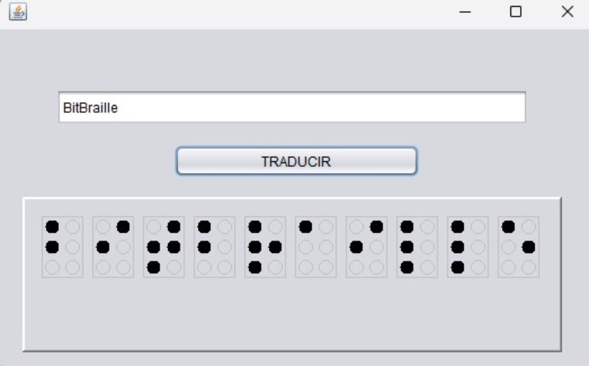
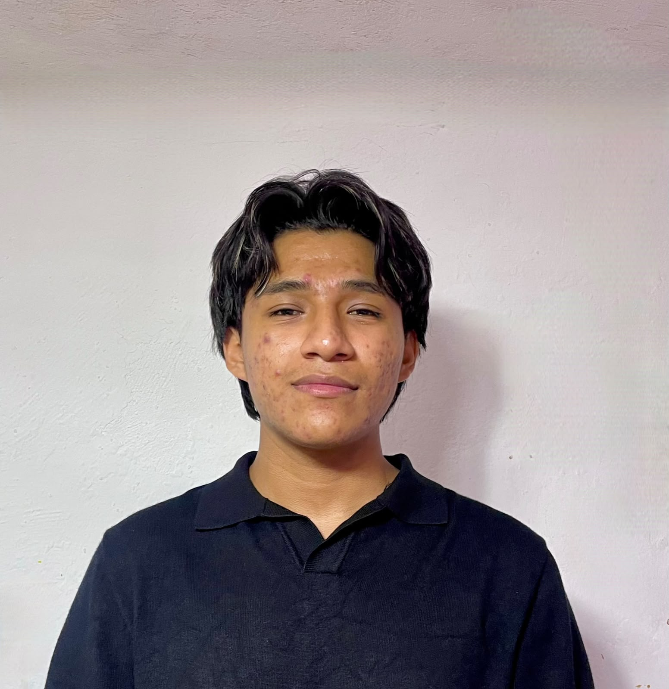
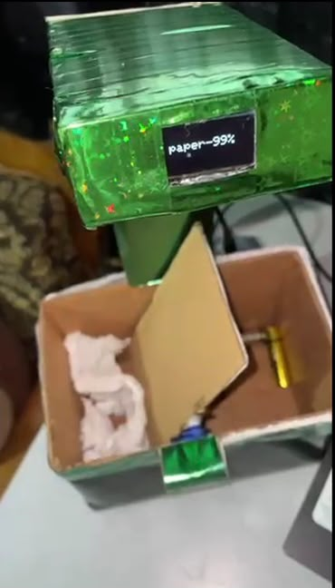

Traductor Braille
Aplicación desarrollada para convertir texto a lenguaje braille. Un proyecto enfocado en la accesibilidad y en aplicar la lógica de programación estructurada para resolver una necesidad real.
Soy estudiante del IPN con un gran interés en las ciencias exactas. Aunque actualmente curso la carrera de Técnico en Computación, mi verdadera vocación y objetivo a futuro es estudiar Ingeniería Química Industrial. Me apasiona resolver problemas, entender cómo funcionan las cosas y el aprendizaje constante.

Siempre he creído que la ciencia y la tecnología son las mejores herramientas para entender el mundo. Disfruto mucho de materias como matemáticas, física y, sobre todo, química. Desarrollar software me ha enseñado a ser estructurado y analítico, habilidades que pienso llevar conmigo hacia la industria química.
Una muestra de mis trabajos técnicos y prácticas en desarrollo.

Aplicación desarrollada para convertir texto a lenguaje braille. Un proyecto enfocado en la accesibilidad y en aplicar la lógica de programación estructurada para resolver una necesidad real.

Diseño, desarrollo y ensamblaje de un prototipo de bote de basura automatizado capaz de diferenciar y clasificar de manera autónoma entre residuos de papel y baterías. El sistema integra visión por computadora y control de hardware para gestionar el proceso de separación y mostrar el diagnóstico en tiempo real.
Creación y desarrollo de una animación 2D de un planeta, elaborada como parte de la materia de diseño. Este proyecto aborda el proceso completo de producción visual, desde la conceptualización estética y el diseño de elementos visuales hasta la sincronización de movimientos en la línea de tiempo.
¿Tienes un proyecto en mente o te interesa mi perfil? Escríbeme directamente a mi correo electrónico y me pondré en contacto contigo a la brevedad.